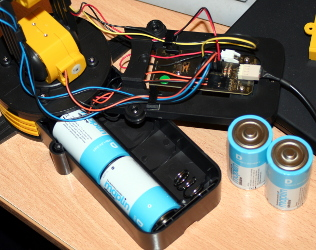

by kyllikki
by kyllikki
The "Edge" Robot ARM is a USB controlled robot arm. The arm is also sold under a number of of other names from numerous retailers including:
{kind=link}
Background and Hardware
I have kids, it was a holiday so I bought this kit from Maplin Electronics as a project for the holiday. Before we had chance to build it someone on reddit posted saying the device needed to be reverse engineered. I obliged, and this is the end result.
{kind=link}
The actual robot arm once built is little more than a toy. The main issues are:
- There are no position encoders or even limit switches (fortunately there are some slip clutches so things don't break) so all movement is performed by timing.
Given the timing is dependant on the USB system and the application being scheduled appropriately on the PC there is already over 50 milliseconds variance in every command. For a half second command that is over 10% variance!
- There is a huge amount of "backlash" in the gear assemblies, do not expect any kind of repeatability on trained sequences.
For example: The gripper run from fully open to fully closed takes 1.5seconds. So you might expect two 0.75s commands to do the same thing, in fact you require two 0.6s bursts.
- There is no provision for an external power adaptor so you end up consuming batteries.
- In case you had not noticed only two of the batteries need be fitted! (between the black contact and the orange) The red wired battery contact goes nowhere once it reaches the PCB!
{kind=link}
The electronics consist of a single sided PCB with a mix of through hole and surface mount devices.
{kind=link}
The motors are interfaced through two ST1152B dual motor controllers and a single channel ST1152A motor controller. The USB to motor driver interface is performed by a pre-programmed EM78M612 microcontroller.
{kind=link}
There appears to be absolutely no decoupling or power supply smooting capacitors anywhere on the board which occasionally makes operation somewhat erratic. I have added a 2400uF electrolytic and a 100nF to the supply rails which has improved operation when using the brake command.
Dependencies
The library depends on libusb version 1.0
The UI depends on vala version 0.7.6
Building the software
The whole project can be built with a simple make invocation:
$ make
This builds both the library "libedgerbtarm.so" and the user interface "edgerbtarm"
If you want to execute "edgerbtarm" from the build directory the LD_LIBRARY_PATH needs setting or the error "./edgerbtarm: error while loading shared libraries: libedgerbtarm.so: cannot open shared object file: No such file or directory" will occur.
$ LD_LIBRARY_PATH=$PWD ./edgerbtarm
If the user executing the program does not have access to the USB device or it is not plugged in an error will be displayed "Unable to connect to USB device" but the program will not exit. An attempt to conenct will be made every time the user tries to move the arm.
License
Released under the MIT License http://www.opensource.org/licenses/mit-license.php
Contact
Vincent Sanders (vince@kyllikki.org)
Download
You can download the latest release (v0.3) of this project in tar format.
You can clone the development branch with Git by running:
$ git clone git://github.com/kyllikki/EdgeRobotArm